CH1, 5 Oct 2026. Station branch station/ch1-dynamic-anchors-20261005 from live b9feb36. Not deployed. Nothing here is on the Hub or the Station until you say so.
Your words: "CBRS is up 38.35%. I clicked on the ticker on the chart — I think the chart is right but the context lens is wrong. Do what TradingView cannot do: anchor the oscillators intelligently so that it always looks nice and clean. Always. Establish the boundaries dynamically."
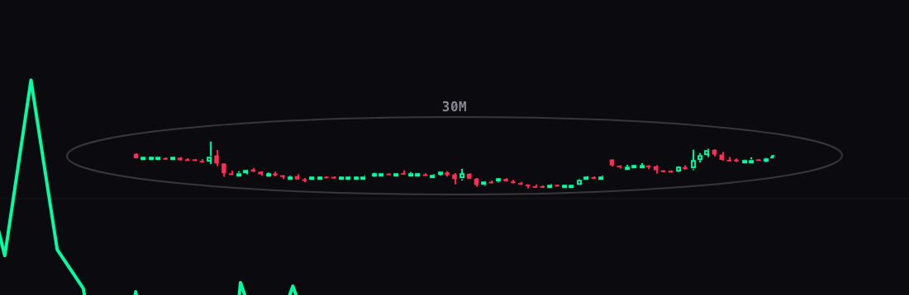
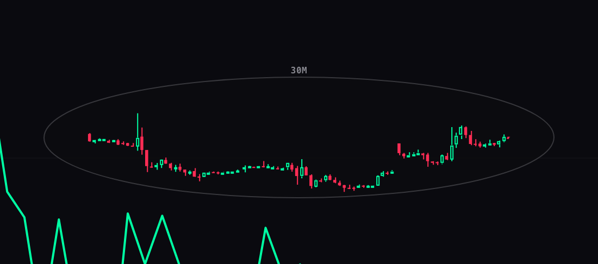
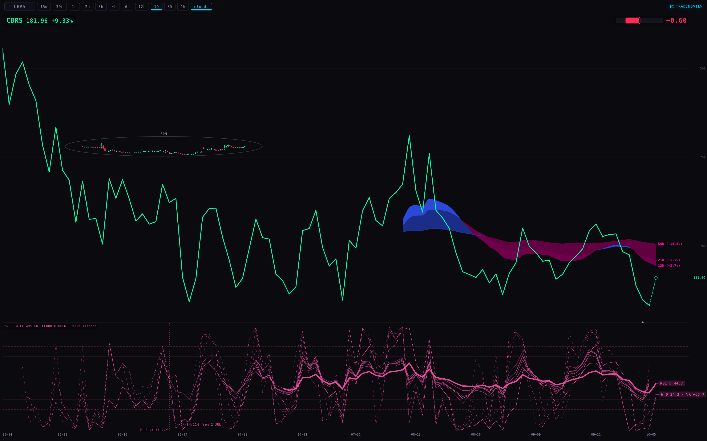
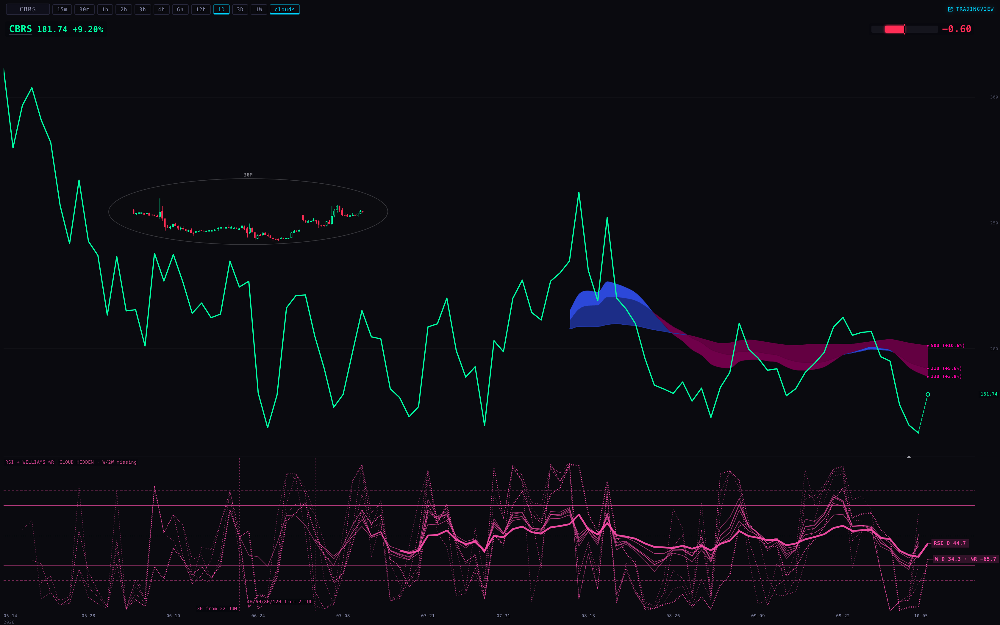
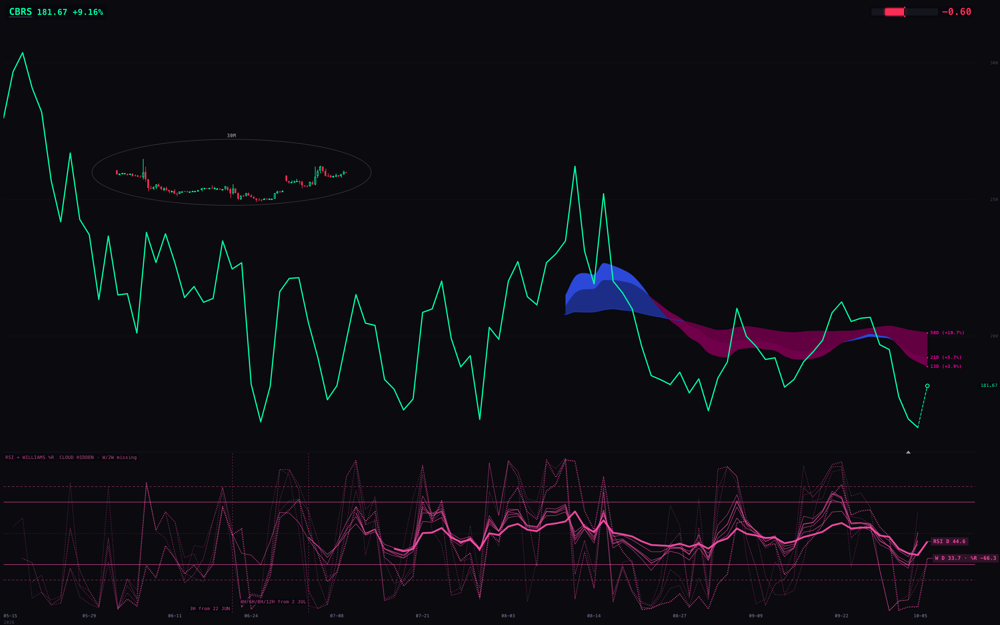
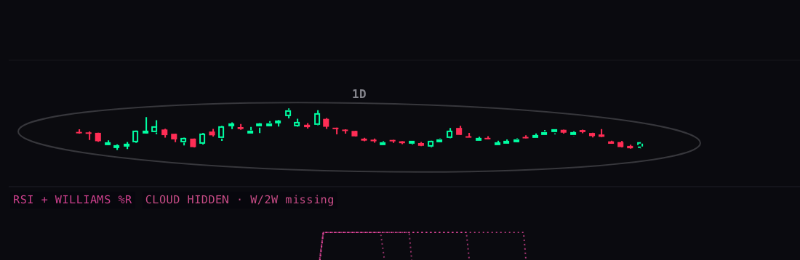
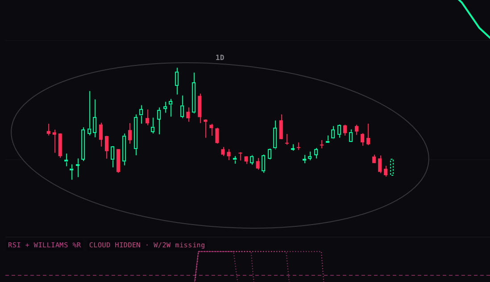
Every picture passed the overflow check: nothing clipped, nothing on the trace, the oscillator room always holding 30/70.
| name · range · host | price room (what's visible) | lens | oscillator room |
|---|---|---|---|
| SNDK 1D Station | 613 .. 2465 (711 .. 2335 visible) | 30m × 3 sessions, 88 candles, fresh | 0 .. 100 |
| SNDK 1W Station | 0 .. 2357 (30 .. 2185 visible) — floored at zero | 20 daily candles, fresh | 0 .. 100 |
| BTCUSD 1h Station | 84,084 .. 87,009 | 60 daily candles, fresh | 17.6 .. 100 |
| BTCUSD 1W Station | 56,183 .. 127,460 | 20 daily candles, fresh | 2.5 .. 100 |
| SPY 1h Station | 759 .. 777 | 60 daily candles, fresh | 0 .. 100 |
| SPY 1D Station · Hub | 652 .. 787 | 30m × 3 sessions, 88 candles, fresh | 0 .. 100 |
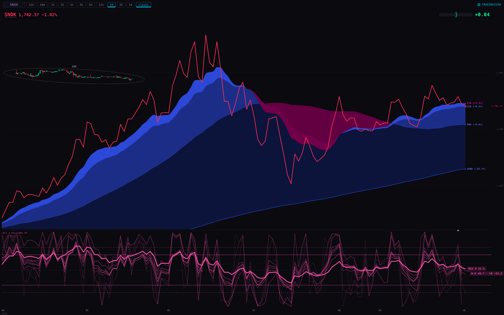
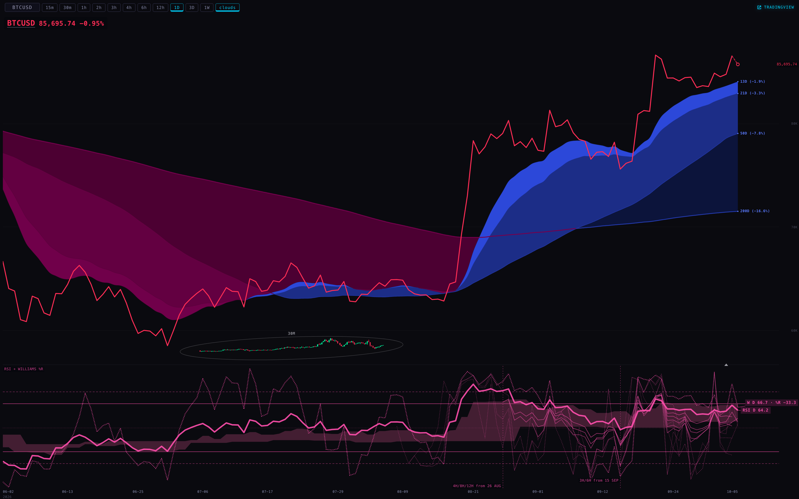
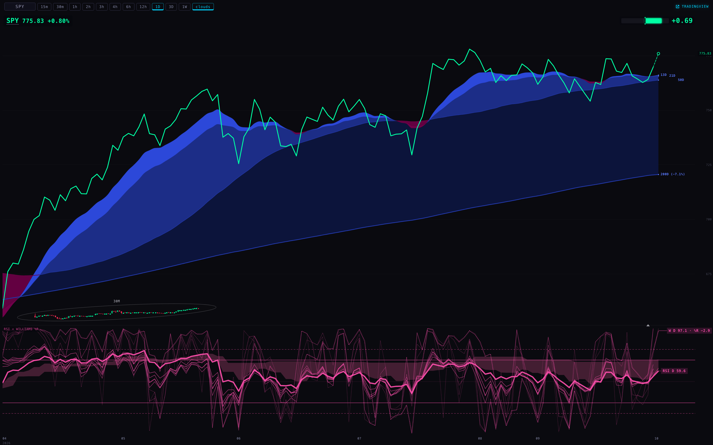
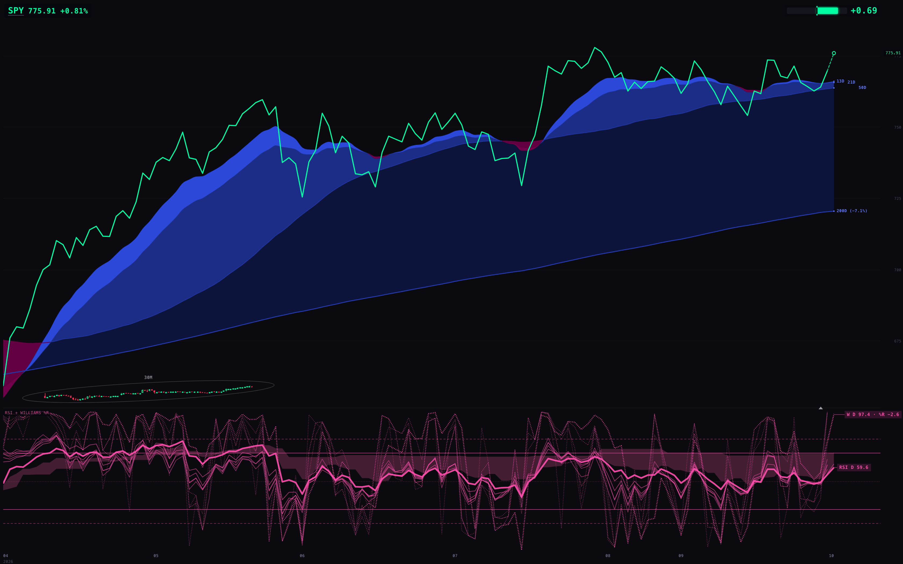
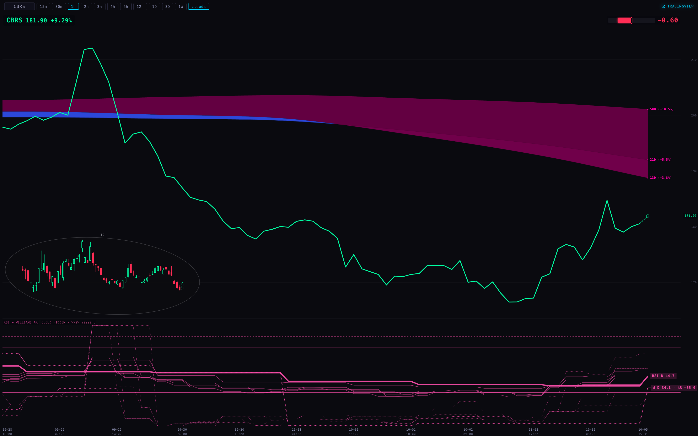
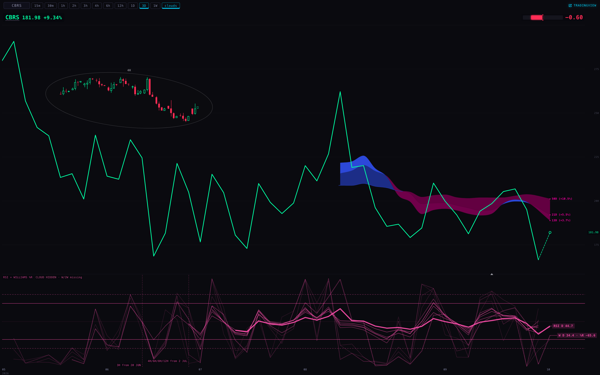
PX_PER_PCT (6 px per 1%) or the caps (30% of the length, 28% of the plot).Code: _indicators/station-lens.mjs (lensRangePct, lensPlotHeight, OVAL.plotShareMax 0.30, OVAL.paneShare 0.28, the step-down ladder in paint), _indicators/station-osc-merge.js (oscDomain, lookY with a domain), chart/index.html = station-shells/chart-v1/index.html (chPriceRange; drawRsiOnly's domain and guide filter). Harness: deliverables/20261005/ch1-anchors/harness/shots.mjs (headless Chromium, the Station served from the worktree, the chart API proxied with the admitted origin, every non-GET aborted) and hub-row.mjs (the live board's row, GET only). Measurements: shots/before-shots.json, shots/after-shots.json. Tests: tests/station-ch1-dynamic-anchors-20261005.test.mjs; Station suite 964 tests / 18 known failures before → 969 / the same 18 after. Data read: chart API candles (CBRS 30m, 1d) and quotes; the Hub's served live_quotes row for CBRS (price 217.25, prev_close 231.01, updated 18 Aug — stale, and not what the board prints today).